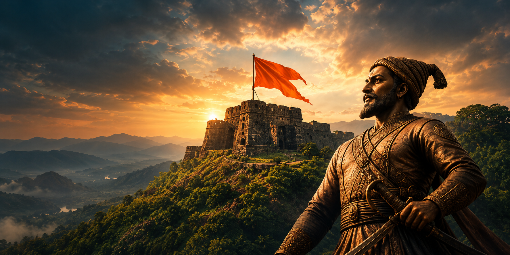

Birth of Shivaji Maharaj
Shivaji Maharaj was born at Shivneri Fort and later emerged as a major leader in the Deccan region.
THE GLORIOUS
Discover the remarkable story of courage, leadership and Swarajya. Explore the rise of Chhatrapati Shivaji Maharaj and the powerful empire that shaped Indian history.
Explore TimelineCoronation
Century Expansion
End of Empire
Swarajya is my birthright and I shall have it.
— Attributed to Bal Gangadhar Tilak
ABOUT THE EMPIRE
The Maratha Empire emerged in the 17th century under the leadership of Chhatrapati Shivaji Maharaj. Beginning in the Western Ghats, the kingdom developed a strong military tradition, an extensive network of forts and a vision of self-governance known as Swarajya.
Over the following decades, Maratha leaders expanded their influence across large parts of the Indian subcontinent. The Peshwas later played a major role in administration, diplomacy and military campaigns.
17th Century
Raigad Fort
Fort and mobile warfare
Marathi traditions
THE JOURNEY
Explore the major events, important turning points and milestones that shaped Maratha history.
Shivaji Maharaj was born at Shivneri Fort and later emerged as a major leader in the Deccan region.
The capture of Torna Fort became an important early milestone in Shivaji Maharaj's expansion.
Shivaji Maharaj was crowned at Raigad, formally establishing his sovereignty as Chhatrapati.
After Shivaji Maharaj's death, Sambhaji Maharaj continued the struggle to defend the kingdom.
After Sambhaji Maharaj's death, Maratha resistance continued under Rajaram Maharaj and other leaders.
Aurangzeb's death changed the political situation and opened a new phase of Maratha expansion.
The battle was a major setback, followed by a period of recovery and renewed Maratha political activity.
The Third Anglo-Maratha War ended Peshwa rule and marked the close of the empire's dominant era.
KEY FIGURES
Meet some of the leaders whose decisions and courage influenced the history of the Maratha Empire.
THE FOUNDER
Founder of the Maratha state and a pioneering leader known for administration and strategy.
THE SUCCESSOR
Son and successor of Shivaji Maharaj, remembered for his resistance during the Mughal conflict.
THE LEADER
Continued Maratha resistance during a difficult period of conflict with the Mughal Empire.
THE REGENT
A formidable leader who helped sustain the Maratha struggle after Rajaram Maharaj's death.
THE PESHWAS
A prominent Peshwa associated with major Maratha military campaigns and territorial expansion.
THE ADMINISTRATOR
A respected statesman known for diplomacy and his important role in Maratha administration.
OUR GALLERY
Discover the forts, landscapes and historic places associated with the Maratha story.
Guardians of the Sahyadri mountains
Engineering and defensive strategy
The landscape behind the legend
A region of strategic importance
A legacy of self-governance
History remembered through generations

THE LEGACY
The Maratha legacy is remembered through its forts, administrative traditions, military history and rich cultural heritage. The story of Swarajya continues to inspire generations to learn about leadership, determination and the history of Maharashtra.
Discover MoreHistory lives on through the courage and vision of those who shaped it.
A REFLECTION ON MARATHA HERITAGE